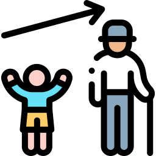
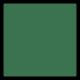

 Age
 Gender
Gender
 Race
Race
Gender Race
Johor
Kota Tinggi
Segamat
Pontian
Batu Pahat
Johor Bahru
Tangkak
Muar
Kluang
Mersing
Kulai Jaya
Negeri Sembilan
Seremban
Kuala Pilah
Jelebu
Tampin
Jempol
Port Dickson
Rembau
Alor Gajah
Pahang
Bera
Rompin
Lipis
Jerantut
Bentong
Raub
Temerloh
Maran
Kuantan
Cameron Highland
Melaka
Melaka Tengah
Alor Gajah
Jasin
Selangor
Kuala Langat
Sabak Bernam
Hulu
Sepang
Klang
Petaling
Ulu Langat
Kuala Selangor
Gombak
Kuala Lumpur
Perak 
Kuala Kangsar
Hulu Perak
Hilir Perak
Batang Padang
Manjung
Perak Tengah
Kuala Kangsar
Larut & Matang
Selama
Kinta
Kelantan
Jeli
Gua Musang
Kuala Krai
Pasir Mas
Kota Bharu
Tanah Merah
Machang
Bachok
Pasir Puteh
Tumpat
Terangganu
Kemaman
Hulu Terengganu
Dungun
Marang
Besut
Setiu
Kuala Terengganu
Pulau Pinang
Seberang Perai Tengah
Seberang Perai Utara
Seberang Perai Selatan
Barat Daya
Timor Laut
Kedah
Baling
Kubang Pasu
Sik
Padang Terap
Langkawi
Bandar Baharu
Kulim
Kuala Muda
Yan
Pendang
Kota Setar
Pulau Dayang Bunting
Pulau Singa Besar
Pulau Tuba
Alor Setar
Perlis
Kangar
Sarawak
Kapit
Miri
Marudi
Kuching
Selangau
Tatau
Bintulu
Belaga
Limbang
Lawas
Lundu
Bau
Serian
Simunjan
Sri Aman
Betong
Saratok
Pakan
Lubok Antu
Julau
Song
Kanowit
Maradong
Daro
Sibu
Matu
Dalat
Mukah
Semarahan
Asajaya
Sarikei
Daro
Sabah  Keningau
Kunak
Tambunan
Tuaran
Kota Belut
Kota Marudu
Sandakan
Pitas
Tawau
Pedalaman
Semporna
Kudat
Labuk & Sugut
Kuala Penyu
Lahad Datu
Kunak
Kota Kinabalu
Kinabatangan
Tongod
Sipitang
Tenom
Pensiangan
Ranau
Beaufort
Papar
Keningau
Kunak
Tambunan
Tuaran
Kota Belut
Kota Marudu
Sandakan
Pitas
Tawau
Pedalaman
Semporna
Kudat
Labuk & Sugut
Kuala Penyu
Lahad Datu
Kunak
Kota Kinabalu
Kinabatangan
Tongod
Sipitang
Tenom
Pensiangan
Ranau
Beaufort
Papar
Keningau
Kunak
Tambunan
Tuaran
Kota Belut
Kota Marudu
Sandakan
Pitas
Tawau
Pedalaman
Semporna
Kudat
Labuk & Sugut
Kuala Penyu
Lahad Datu
Kunak
Kota Kinabalu
Kinabatangan
Tongod
Sipitang
Tenom
Pensiangan
Ranau
Beaufort
Papar